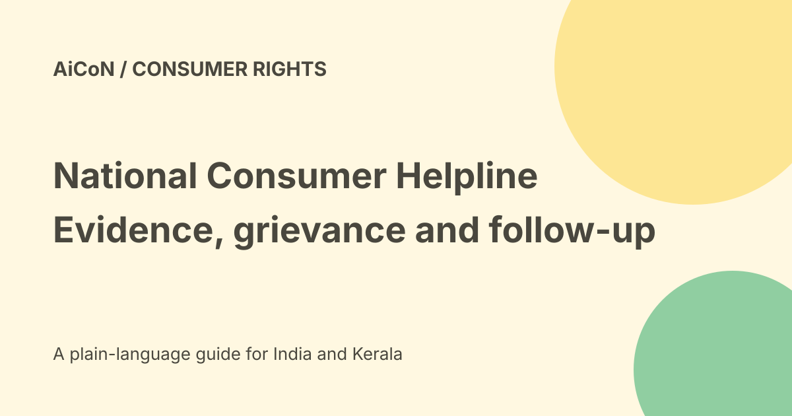

National Consumer Helpline: raise and track a grievance
The Department of Consumer Affairs runs the National Consumer Helpline, or NCH. It is a pre-litigation grievance route. The current contact page lists 1915 daily from 8 AM to 8 PM except national holidays, and SMS 8800001915 for a callback. Filing a grievance does not guarantee a refund.

What NCH can do
The official About page describes awareness, advice and redressal of consumer grievances through INGRAM, an integrated mechanism involving companies, authorities, regulators and other stakeholders.
It is an alternate dispute-redressal route before litigation. If you are dissatisfied, the page says you can approach the appropriate Consumer Commission. NCH is not itself a Consumer Commission ruling.
Choose an official route
The portal lists web registration, the NCH app, UMANG, phone, SMS and WhatsApp. Use links or contact details on the actual government page rather than a search advertisement or a random refund message.
The current contact page gives 1915 with its hours. The About page also lists toll-free 1800-11-4000. For SMS, it says send to 8800001915 and the service will get back to you.
Prepare before registering
Keep the invoice, order number, purchase date and the seller or service provider's details. Save relevant emails, messages and evidence of the problem.
Write a short chronology: what you bought, what went wrong, when you contacted the business and what remedy you seek. State facts you can support. Avoid threats, invented events and unrelated personal accusations.
Online grievance steps
- Open the official NCH portal.
- Choose the consumer login and registration route.
- Enter and verify the details requested by the current form.
- Sign in through the official page.
- Choose the relevant grievance details and category.
- Describe the problem and remedy clearly.
- Attach relevant supporting records if available.
- Read the full complaint before submission.
- Keep the grievance number and track responses.
The About page describes one-time registration and account verification. These are general published steps, not a claim that every current form uses identical labels. No account or complaint was created here.
Read the response, not only the status
A status update can record that a response was received without proving that the requested refund or repair happened.
Compare the reply with the issue and supporting records. Keep your chronology and any follow-up concise. Do not repeatedly create duplicate complaints when the existing channel provides a way to track or respond.
When further action may be needed
NCH's pre-litigation role does not guarantee agreement from a business or decide every legal entitlement. The appropriate Consumer Commission is a separate route if unresolved.
Do not assume an NCH grievance pauses every legal deadline. For a high-value or time-sensitive dispute, obtain suitable advice on the relevant rules and forum.
Protect evidence and private details
Bills and screenshots can reveal addresses, account numbers and unrelated transactions. Keep evidence needed for the grievance, but avoid adding unnecessary private information.
Never give a caller your UPI PIN, password, OTP or card security code to receive a refund. Do not install remote-access software or pay a release fee because someone claims to handle your NCH complaint.
Cost and Kerala use
The About page calls its phone route toll-free. The checked pages do not state a complaint-registration charge. Mobile data, separate professional advice or litigation expenses are different.
This national consumer route can be relevant for readers in Kerala. Check the actual language and category options rather than assuming all channels have identical support. No language selection or call was tested.
Urgent fraud is different
A routine consumer grievance should not delay contacting your bank when money has just been taken or account access is at risk. Use the bank's verified emergency channel and the appropriate official fraud-reporting route.
Do not send payment credentials through the consumer complaint merely to prove that you own an account.
What changed since the original post?
We retain the official contact hours and SMS callback route, add preparation and tracking steps, and separate grievance handling from a guaranteed refund, court decision or legal-deadline extension.
Frequently asked questions
Does NCH guarantee a refund?
No.
Can I attach bills?
The official registration guidance allows supporting documents if available.
Was a grievance submitted?
No. This is a source-checked guide.
Sources: Official NCH portal · Current contact page · Official pre-litigation scope and registration. Checked 7 October 2026.